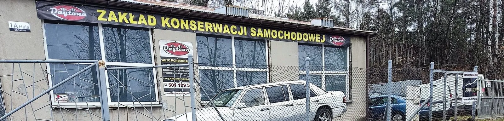

Kontakti dojazd
Zakład jest w Chrzanowie, od strony Libiąża – blisko z Trzebini, Jaworzna i Oświęcimia.
Zostaw numer.Resztą zajmę się ja.
Oddzwonię z ceną i najbliższym wolnym terminem. Ze względu na specyfikę pracy najlepiej po prostu zadzwoń.
501 199 501ul. Leśna 1a, 32-500 Chrzanów
Chrzanów-Kąty, od strony Libiąża
witopoz@wp.pl
Faktura VAT
